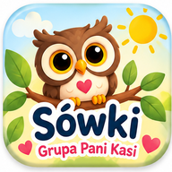

📖 Wspólne czytanie
Rodzice wraz z dzieckiem organizują wspólne czytanie wybranej książki.

Najważniejsze informacje naszej grupy w jednym miejscu.
Galeria jest chroniona hasłem.
● Arkusz aktualizowany na bieżąco
Całoroczna akcja czytelnicza naszej grupy.
W wyznaczony weekend dziecko zabiera jedną z Sówek oraz „Dziennik podróży” do domu. Sówka może uczestniczyć w codziennym życiu rodziny, wspólnych zabawach, spacerach, wycieczkach i oczywiście w czytaniu książek.
Rodzice wraz z dzieckiem organizują wspólne czytanie wybranej książki.
Można wpisać datę, tytuł książki, autora i osoby uczestniczące we wspólnym czytaniu. Wpis można dowolnie ozdobić i dołączyć pamiątkę lub zdjęcie.
Po weekendzie dziecko może opowiedzieć grupie, jak Sówka spędziła czas w jego domu, a nauczycielka zaprezentuje wpis z dziennika.
Podczas pobytu w domu wspólnie dbamy o maskotkę. Ze względów bezpieczeństwa Sówka nie powinna znajdować się z dzieckiem w łóżku podczas snu.
Dziecko zabiera Sówkę do domu w piątek, a w poniedziałek maskotka wraca do przedszkola. 🦉📚💜